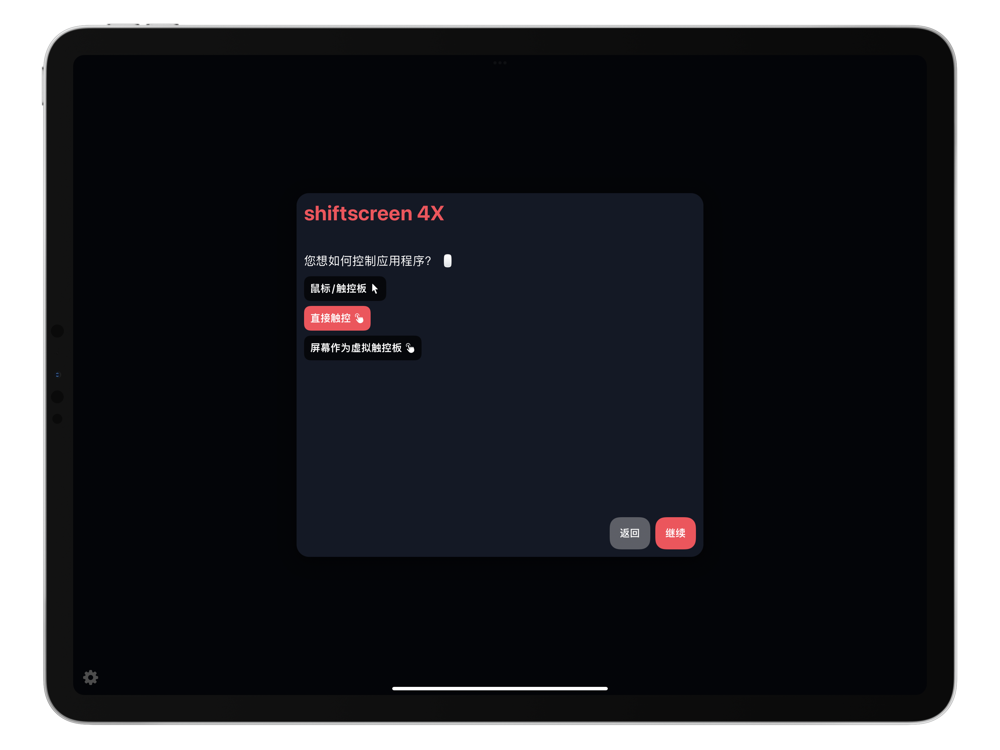

shiftscreen 4X：多窗口交互再升级
将近七个月之前，我 写过一篇关于 shiftscreen 的文章，介绍了这款尝试给 iPad 带来多窗口操作体验的 app，认为它算是部分解决了 iPad 上多窗口操作的有无问题。当时在文章中，我提到 shiftscreen 还有几方面的短板，概括起来大概是：
- 光标根据上下文切换、中文文件显示等适用性 bug；
- 「视频投屏器」本质带来的效能问题；
- 「网页浏览器」本质带来的功能上限问题。
想必开发者也意识到了这些问题。WWDC 2021 上苹果对 iPadOS 的拉胯处理，无疑意味着 iPadOS 多窗口操作又要晚来至少一年。在这种情况下，shiftscreen 可以说是「全村人的希望」也不为过。万幸，随着新版本 shiftscreen 4X 的发布，这次「全村人的希望」总算是在一定程度上「支棱」起来了。
体验升级
打开 shiftscreen 4X，app 会要求你在「鼠标/触控板」、「直接触控」、「iPad 屏幕作为虚拟触控板」三种操作方式中选择一种。你可以根据自己的使用需要和不同的使用情景，选择、切换自己喜欢的操作方式。例如，出门在外时选择「直接触控」模式，像使用其他 iPad 应用一样使用 shiftscreen 4X；等有了外接显示器，再接上显示器和其他输入设备，选择「鼠标/触控板模式」；如果没有鼠标或触控板，还可以选择「iPad 屏幕作为虚拟触控板」模式，将 iPad 作为 shiftscreen 4X 的指点设备。

个人使用下来，感觉此次新增的「直接触控」模式泛用性最强，哪怕没有外接显示器，也能体验 shiftscreen 4X 的绝大部分功能，而且体验还不错。
按照引导添加第一个窗口后，可能大家梦寐以求的情景就出现了：新的页面是以窗口的形式打开的。这也是 shiftscreen 4X 最大的卖点和改进。悬浮窗口最大的好处，就是排布、数量都更为灵活。shiftscreen 中，窗口之间是并排密铺，没有太多调整的余地。shiftscreen 4X 中，窗口就像桌面操作系统一样，可以随意自定义大小和位置。如果需要添加新的窗口，只需点击右下角的图标，在「Mission Control 界面」左上角选择想要打开的窗口类型即可。相比于 shiftscreen 两个「桌面」、八个「窗口」的限制，shiftscreen 4X 可谓是火力全开，桌面数量、单个窗口的标签页数量，都没有上限，可以想加多少就加多少。
「Mission Control 界面」左上角，shiftscreen 4X 预置了不少常见网页服务的入口，比如 Notion、Google Docs、Slack，甚至还有内置的计算器，也算是了结了 iPad 用户的夙愿。
当然，归功于「浏览器」的本质，shiftscreen 4X 和前辈 shiftscreen 一样，除开这些内置的服务，只要是支持网页端的，都可以正常运行。本文就是开着飞书、flomo 和上一篇关于 shiftscreen 的文章写的。这三个平台（第三个指少数派）都对网页端适配不错，效果比起无遮挡只能二分屏的原生方案来说，简直不要太高效。如果你嫌工具栏、地址栏碍事，也可以在「Mission Control 界面」里关闭特定窗口的顶栏。这样一安排，真就像开了三个独立的 app 一样。

而在「Mission Control 界面」的右上角，集中着 shiftscreen 4X 主要的控制按钮。在这里，你可以一键调整亮度、切换操作模式、居中窗口，或者改变窗口尺寸、排布。
由于手指并不算很精确的指点设备，shiftscreen 4X 为「直接触控」模式下的窗口控制做了针对性优化。手指在窗口四角长按，就能改变窗口形状尺寸。只要将窗口拖到屏幕或其他窗口的边缘附近，就会有一个吸附动画，帮你对齐窗口，省去了手动微操的麻烦。
除了「直接触控」模式，我还体验了「鼠标/触控板」模式。由于采用了「真实」的「多窗口」界面，shiftscreen 4X 的光标控制相比前辈也有了大幅提升。光标可以根据情境改变，移到窗口四角就能变成双箭头；而针对不同的内容类型，右键也能打开宛如桌面环境般的右键菜单。

对于一款需要外接键鼠才算是完全体的 app 来说，只有鼠标优化自然是不够的。shiftscreen 4X 同时也提供了完备的键盘快捷键，且每个功能都能修改快捷键组合，配合 iPadOS 的 长按 command 键查看键盘快捷键，的确有点儿桌面操作系统的意思了。
最后，相比前辈那只能算解决有无问题，甚至是在糊弄事的 PDF 阅读器，shiftscreen 4X 的 PDF 阅读器进步也不小。现在，打开中文 PDF 文件终于不是乱码一片了，而且还有一定的批注（高亮）能力，长得像预览 app，核心功能上也相差不远。

不足与展望
可以看出，shiftscreen 4X 相比 shiftscreen，确实解决了一大堆痛点问题，使用体验可以说有了质的提升。话虽如此，由于各种主客观原因，shiftscreen 4X 依然存在一些缺点。最首要的就是效能问题。受限于 iPadOS app 的内存限制，只要切换至其他 app，甚至是切换到其他桌面，原有的网页就需要时间响应，甚至需要重新加载，哪怕是我的 2018 年 12.9 寸 iPad Pro 也不能幸免。码这篇文字的时候，我已经数不过来飞书重新加载了多少次，只要切到 Lightscreen 给截图套壳、打开照片 app 加文字，或是打开备忘录 app 看草稿，就会失去响应，一「休克」就是半分钟，最后只得无奈刷新。1
其次，没有竖屏模式。shiftscreen 推出的初衷，其实是为了改进 iPad 外接显示器的使用体验，因而注重横屏操作和界面，shiftscreen 4X 在此基础上又带来了较为完整的多窗口体验。将横屏体验优化得不错，但竖屏体验的缺席，依然是一大憾事。假如在使用 shiftscreen 4X 时将 iPad 转至竖屏，你就只能看到垂直居中、比例不变的宽屏窗口，因为此时，shiftscreen 4X 仍在兢兢业业地履行自己「视频投屏器」的职责。如果能纵向开两个窗口，上面放视频，下面记笔记，使用体验想来也不错（我只想到这一个使用场景，能因此提升使用体验的场合肯定不少）。
话虽如此，在 shiftscreen 4X 的设置界面，你能找到开发者为这款 app 的后续更新规划的路线图。从 shiftscreen 给出的路线图不难看出，这次开发者是认真的。打通 Office 365 这种本来就有网页端的服务暂且不谈，支持 Notability 和 Goodnotes 这两款 app 的文件格式，markdown、LaTeX 编辑器，游戏模式，Apple Pencil 支持，多显示器优化等等功能，简直就是一张张令人胃口大开的大饼，起码在态度上，说明开发者真的想让 shiftscreen 家族成为 iPad 上正儿八经的多窗口显示解决方案。

当然，任重而道远，shiftscreen 4X 和其前身一样，都是螺蛳壳里做道场，跳不出 iPadOS app 本身的束缚。但 shiftscreen 4X 的存在本身，似乎就在向我们证明：iPad 上的多窗口操作，不是做不到，或许只是时机不成熟罢了。最后，重复一下我上篇文章给出的购买建议：
如果你有给 iPhone / iPad 外接显示器的手段；
如果你的工作流纯用 web app 可以搞定；
如果你也想尝鲜；
那 shiftscreen 也不失为一个选择。
否则，还是等苹果画完这张一定会有个说法的饼吧。
你可以在 App Store 下载 shiftscreen 4X，售价 ¥50。
欢迎将您的想法、评论、意见、建议发送至 harveyjanson@icloud.com，请注明「讨论」字样，我会尽量回复。
- 1.这很可能是由于 shiftscreen 4X 尚未针对飞书专门优化。 ↩
shiftscreen 4X：多窗口交互再升级
http://harveyjanson.github.io/2021/10/09/2021-10-09-shiftscreen-4x/